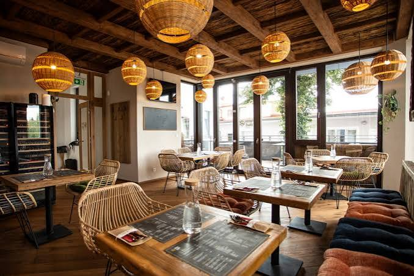

Our Story
About Velora Kitchen
A neighborhood bistro built on fresh ingredients, honest cooking, and a room that feels like an occasion.

Since 2014
Casual dining, done with real craft
Velora Kitchen opened with a simple idea: a restaurant where a weeknight dinner and a special celebration could both feel right at home. No stiff formality, no shortcuts on flavor — just a kitchen that takes its ingredients seriously.
Over the years, our menu has grown from a short list of comfort classics into a full spread spanning Indian, Italian, and continental favorites, but the philosophy hasn't changed: source well, cook with care, and serve every table like it's the only one in the room.
What Guides Us
Our Values
Freshness First
Ingredients are sourced daily from trusted local suppliers, never frozen longer than necessary.
Genuine Hospitality
Every guest is treated like a regular, from their first visit to their fiftieth.
Craft in the Kitchen
Our chefs train across cuisines, so every dish — Indian or Italian — gets the technique it deserves.
Milestones
Our Journey
Velora Kitchen opens its doors as a small 20-seat bistro in Koregaon Park.
Menu expands to include Indian Kitchen and Chef's Specials, doubling our seating capacity.
Full interior renovation introduces the midnight-and-gold dining room guests know today.
Now serving over 60 signature dishes across ten menu categories, daily.
Meet the Team
The People Behind the Plates
Arvind Rao
Head ChefMeera Shah
Sous ChefVikram Desai
Restaurant ManagerPriya Nair
Guest RelationsGood to Know
Visit Us
Hours
Open Daily
11:00 AM – 11:00 PM
Location
221 Baker Street
Koregaon Park, Pune
Reservations
Recommended on weekends
Walk-ins welcome